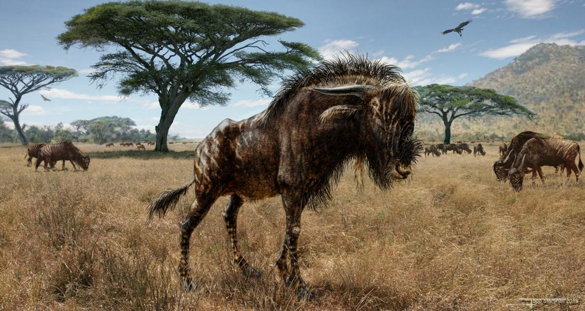
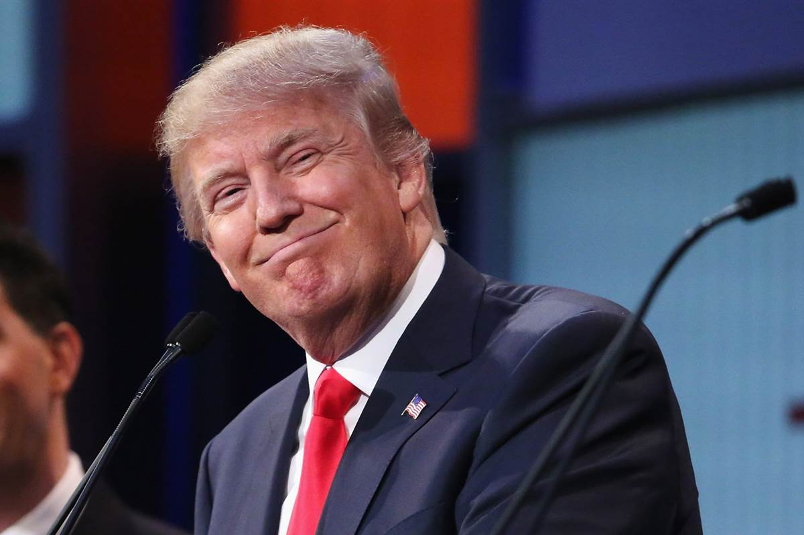
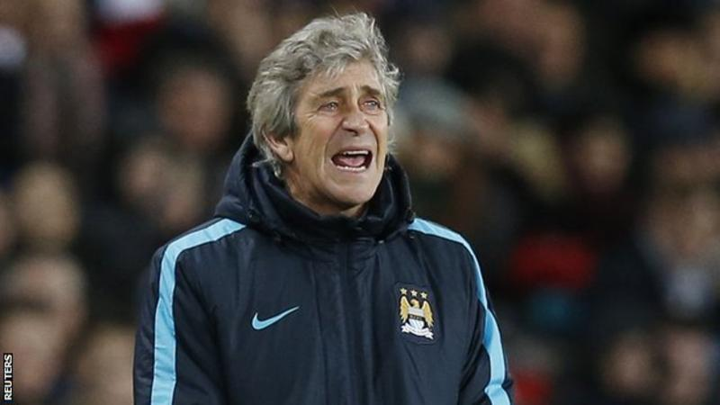

Energy & Environment
A strange fossil wildebeest had hollowed-out headgear that let it trumpet like a dinosaur. The Ice Age beast, named Rusingoryx atopocranion, lived on Kenya’s Rusinga Island between 75,000 and 50,000 years ago, back when the area was carpeted in dry grasslands. The species was previously only known from partial skulls, but now a bonebed has revealed that they were more bizarre than anyone expected. New Rusinga excavations turned up six Rusingoryx skulls, ranging from juvenile to adult, that were more complete than any found before. “The first time I saw them my jaw completely dropped,“ says paleontologist Haley O’Brien of Ohio University, lead author of the study. The research was supported by the National Geographic Society's Committee for Research and Exploration. Incomplete fossils had led paleontologists to suspect Rusingoryx had some kind of tapir-like proboscis, but the new skulls showed that the mammal instead had a high nasal dome in front of its eyes. And it was hollow, encasing a circuitous nasal passage. Picture of a fossilized skull The dome snouted Rusingoryx lived in the hot grasslands that once covered Kenya’s Rusinga Island. PHOTOGRAPH BY HALEY O'BRIEN “There aren’t any living animals with a nasal apparatus like this,“ O’Brien says, but there are some fossil ones. Outside and in, the nose of Rusingoryx resembles the hollow crests of the “duckbilled“ dinosaurs Corythosaurus and Lambeosaurus, which lived about 75 million years earlier. “Both groups essentially push the nasal part of their airway into the crest, and they’re using similar suites of bones to form the crest itself.“ Other paleontologists are just as surprised. Royal Ontario Museum paleontologist David Evans, an expert on hadrosaurs, says he was “blown away“ by the Rusingoryx skulls and that “the resemblance between Rusingoryx and some hollow-crested dinosaurs in the form of the nasal structures is truly striking.“ The big question that always faces paleontologists when they uncover a bizarre structure is whether or not that odd appendage had a function, and what that function was. In the case of Rusingoryx, O’Brien says, “we used a process of elimination.“ One of the early ideas, O’Brien says, is that the expanded nose of Rusingoryx was better at cooling or warming incoming air. All mammals have some ability to do this, even humans, thanks to scroll like bones called turbinates that increase the surface area inside the nose. Given that Rusingoryx lived in “a hotter, drier savanna than what we have today,“ O“Brien says, it seemed possible that the mammal’s nose was an enhanced air conditioner, but the dome“s internal anatomy didn’t hold up this conclusion. Combat was another possibility, especially since hoofed herbivores, from bison to bighorn sheep, have regular head-to-head clashes. But these mammals have extra thick skulls and horns, O’Brien says, and Rusingoryx didn’t. “The skull bones of Rusingoryx are incredibly thin,“ O’Brien says, “so using that dome for head-butting would have been a really, really dangerous idea.“ “That left us with sound, which sounded kind of crazy until we looked at vocal behavior of other artiodactyls,“ O’Brien says. Many social, hoofed herbivores are chatty and have ways to modulate their vocal tracts to make a range of wails and grunts. This seemed to be the best fit for Rusingoryx, and the anatomy and acoustic models fit the hypothesis. “Between the anatomy, the pencil and paper physics, and the vocal behavior of living artiodactyls, sound production made a lot of sense,“ he says. So what did Rusingoryx sound like? From the nasal loop, O’Brien says, “We calculated a frequency of between 250 and 750 hertz, which is not only pretty low, it also overlaps with the sonic frequencies of a vuvuzela.“ That means a herd of Rusingoryx might have sounded like a stadium full of fans at the South Africa World Cup. With added soft tissues, Rusingoryx may have been capable of even deeper vocalizations that would have been inaudible to us. “Rusingoryx could very likely make a low trumpeting sound but there’s a good chance it could also vocalize in stealth mode.“ While Evans points out that such a dome was likely important for visual display and recognition, too, he agrees that “the case of vocalization as the primary function of the nasal dome in Rusingoryx is by far the most convincing.“ And this shows that the evolution of bizarre skulls aren’t just driven by combat or showing off. While we’ll never know exactly what Rusingoryx sounded like without the soft tissues of the throat, O’Brien says, it’s clear that these were vocal beasts that thrived and perished very close to us in time. Imagining what a herd of these nosy mammals would have sounded like, O’Brien calls it a “Pleistocene cacophony.“
Politics
Donald J. Trump on Tuesday seized on a feud between the campaigns of Ben Carson and Senator Ted Cruz of Texas over whether the winner of the Iowa caucuses helped depress the vote for the retired neurologist in the state on Monday night. Mr. Trump tried to use the flap between Mr. Carson and Mr. Cruz to his benefit, accusing Mr. Cruz of deploying dirty tricks to harm his rival in the caucuses. “What kind of people are we dealing with,” Mr. Trump asked at a rally in New Hampshire, his first public appearance since his second-place finish in Iowa, below where the final polls before the caucuses had put him. On Monday night, Mr. Carson’s campaign accused Mr. Cruz’s team of spreading a false rumor, while voters were still caucusing, Mr. Carson was suspending his campaign. In a scorched-earth statement, Mr. Carson accused his opponents of using “political tricks by tweeting, texting and telling precinct captains to announce that I had suspended my campaign – in some cases asking caucus goers to change their votes.” Mr. Trump, at his own event, described it as Mr. Cruz telling people, “Ben Carson quit, and let me have your vote.” The reports about Mr. Carson seemed to stem from a news account about his going home to Florida after the caucuses. His campaign tried to quickly make clear he was merely going home for a break and a change of clothes, but the word was being spread by then. In an statement, Mr. Cruz praised Mr. Carson and appeared to acknowledge his team had erred. “Last night when our political team saw the CNN post saying that Dr. Carson was not going on to New Hampshire and South Carolina, our campaign updated grassroots leaders just as we would with any breaking news story. That’s fair game,” he said. “What the team then should have done was send around the follow-up statement from the Carson campaign clarifying that he was indeed staying in the race when that came out.” Mr. Cruz is not much of a threat to Mr. Trump in New Hampshire, although he devoted a segment of time in his rally toward continuing to criticize the senator, as he has done for weeks. But Mr. Cruz could be problematic for Mr. Trump in South Carolina.
Sports
Manchester City will prioritise the Champions League above their FA Cup fifth-round tie at Chelsea on Sunday, according to boss Manuel Pellegrini. City play the first leg of their Champions League last-16 match at Dynamo Kiev on Wednesday, four days before the Capital One Cup final. The Chilean said: "The priority is always the next game, but we must make an exception because of many injuries." City's visit to Chelsea will be shown live on BBC One on Sunday at 16:00 GMT. The 2012 FA Cup winners are still in contention to a complete an unprecedented quadruple by winning the Premier League, League Cup, FA Cup and Champions League. They will have to play a game in each competition in an 11-day span between 21 February and 2 March.
Games
Ubisoft has very high hopes for The Division. Managing director John Parkes said this week at Ubisoft's Investor Day presentation that the third-person shooter has the potential to become one of the biggest new game IP launches of all time, joining the likes of Bungie's Destiny (2014), as well as Ubisoft's Watch Dogs (2014) and Assassin's Creed (2007). Below is a slide that Parkes shared on the subject of new IP, while more comments follow. "Because of its many attributes--RPG, shooter, massive online multiplayer, realistic setting in a beautifully recreated New York, great open world playable in solo or in co-op--The Division can become one of the biggest launches ever for a new IP," Parkes said. He went on to note that The Division's trailers have generated 225 million views, which is 30 percent ahead of where Watch Dogs was one month before launch. Additionally, Parkes said Ubisoft was humbled by the interest players are showing for The Division, noting that the game's closed beta saw more registrations than any Ubisoft game ever. Overall, three times more people played the beta than Ubisoft had anticipated, Parkes said. The Division's closed beta was held at the end of January for people who preordered. The open beta launched this week and is now available across PlayStation 4, Xbox One, and PC. After multiple delays, The Division is now slated to arrive for all three systems on March 8. In other news, the game's expansions will reportedly launch 30 days early on Xbox One.